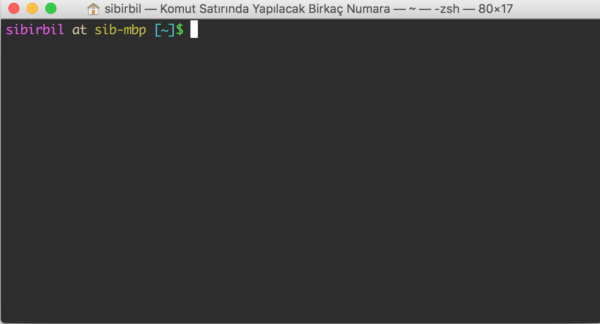

Komut Satırında Yapılabilecek Birkaç Numara
Linux ve Apple bilgisayarlarda kurulumla birlikte gelen bir terminal programı vardır. Eğer Windows bir makinede çalışılacaksa, terminal kullanmak için Cygwin yüklenebilir. Bu arada Windows 10 için doğrudan bir kurulum yapmak da mümkünmüş.
Bu terminal sayesinde, özellikle Unix işletim sistemleri için geliştirilmiş, oldukça güçlü bazı komutları kullanabilirsiniz. Bu komutlar dizinler arasında gezmeye, dosyalara göz atmaya ve işletim sisteminden hızlıca bilgi almaya yararlar.
Bu yazıda ayrıntılı komutlara, hele hele işletim sistemine yapılan detaylı sorgulara girmeyeceğiz. Önceliğimiz en basit komutları öğrenmek, dosyaları kurcalamak ve tablo halindeki veriyi işlemek. Hatta tüm bunlara hızlı bir giriş yapacağız demeliyim. Asıl amacım sizleri komut satırını kullanmaya ikna etmek ve merak uyandırmak. Eğer bu yazıdan sonra terminal kullanmaya başlayıp, yeni komutları internette aramaya koyulduysanız, amacıma fazlasıyla ulaşmışım demektir.
1 Temel Komutlar
Eğer kurulum safhasını tamamladıysanız, terminali çalıştırdığınızda karşınıza şuna benzer bir ekran çıkar:

Ben bu yazıyı Apple marka bir bilgisayarda yazıyorum. Onun için sizin açtığınız terminal programının görüntüsü farklı olabilir. Örneğin arka planı açık renktir ya da yazı karakterleri farklıdır. Bu ekranda
sibirbil at sib-mbp [~]$
ile başlayan kısım komut satırını gösteriyor. Kabaca bir hesap makinesi ekranı gibi düşünebilirsiniz. Bu yazının kalanında göreceğiniz komutları işte bu satıra yazacağız.
Malum, bilgisayarlar ile ilgili bir yazıya "Merhaba Dünya" demeden
başlanmaz. Komut satırında ekrana bir yazı yazdırmak için echo komutu
kullanılıyor.
echo "Merhaba Dünya"
Merhaba Dünya
Şimdi dizinler arasında dolaşmaya bir bakalım. İlk komutumuz
pwd. İngilizce print working directory kelimelerinin baş harflerinden
oluşuyor. Bu komut içinde bulunduğumuz dizini gösterir.
pwd
/Users/sibirbil/Dropbox/ToDo/UnixKomutSatiri
Bulunduğumuz dizin içindeki dosyaları ve dizinleri görmek içinse
list sözcüğünün kısaltması ls komutunu kullanıyoruz.
ls
UnixKomutSatiri.html UnixKomutSatiri.org resim
Burada dizinin içindeki dosyaları ve "resim" isimli dizini
görüyorsunuz. Sırada dizinler arasında geçiş yapma var. Bunun için
change directory kısaltması cd kullanılıyor. Şimdi "resim" dizinine
geçip, içindekilere bakabiliriz.
cd resim; ls
terminal.png
Dikkat ederseniz iki komutu, cd ve ls, tek satırda yazmak için arada
noktalı virgül kullandık. Bu sayede önce "resim" dizinine geçtik ve
oradaki dosyaları listeledik. Tam bu aşamada iki özel dizinden
bahsetmekte fayda var. Şu an çalıştığınız dizin için "." üstteki
dizin içinse ".." kullanılıyor.
cd ..; ls
UnixKomutSatiri.html UnixKomutSatiri.org resim
Komut satırında joker karakterler kullanmak işleri hızlandıracaktır. Yani bu karakterler bir ya da birden fazla karakterin yerine giriyorlar. Önemli bir kısmını şu sayfada özetlemişler. Ben sadece birini anlatacağım; "*" karakteri. Bu sembol bilinmeyen sayıdaki karakter dizisi yerine kullanılıyor. Aşağıdaki komut ile uzantısı ".org" olan tüm dosyaları listeleyebiliyoruz:
ls *.org
UnixKomutSatiri.org
Ya da bu yazının dosyalarına bakabiliriz:
ls Unix*.*
UnixKomutSatiri.html UnixKomutSatiri.org
Az sonra dosyalarla uğraşmaya başlayacağız. Tabii başka komutlar
göreceğiz. O aşamaya geçmeden önce bir hatırlatma yapayım. Burada
komutların en basit hallerini kullanıyorum. Aslında çok daha farklı
numaraları var. Eğer herhangi bir komutun kullanımlarını ve
seçeneklerini incelemek isterseniz man komutunu kullanarak yardım
alabilirsiniz:
man <komut_ismi>
Örneğin
man ls
Şimdi ilk fırsatınızda dosya kopyalama (cp), dosya taşıma ya da isim
değiştirme (mv) ve dosya silme (rm) komutlarını öğrenebilirsiniz.
2 Metin İşleme
Önce "metin" ile ne demek istediğimizi anlatmaya çalışayım. Bilgisayarda dokümanlar genelde iki formatta kaydedilir: ikili (binary) ve metin (text). Örneğin MS Word ile yazılan bir yazı, uzantısı ".docx" olacak şekilde ikili formatta kaydedilecektir. Öte yandan içinde çalıştığımız bu dizinde yer alan ".org" ve ".csv" dosyaları metin formatında kaydedilmişlerdir. Metin dosyalarının içindekilere baktığımızda okuyabileceğimiz harfler ve sayılar görürüz. Ancak ikili dosyaları açmak için özel programlara ihtiyacımız vardır. Örneğimize dönersek, ".doc" uzantısı ile kaydedilen bir dosyayı açmak MS Word ya da Libre Office gibi bir program kullanırız. Bu çok da büyük bir kısıtlama olarak düşünülmesin. İkili dosyalarla çalışan programların pek çoğu farklı biçemlerde kaydetme seçeneği sunarlar. Örneğin MS Word dosyalarını ".txt" uzantılı olarak ya da MS Excel dosyalarını ".csv" olarak metin formatında kaydedebilirsiniz.
Biz bu kısımda metin biçiminde dosyaları kurcalayacağız. Önce araya
kullanışlı başka bir komut sıkıştırayım. İnternetten tam adresini
bulduğunuz bir dosyayı wget komutu ile
indirebilirsiniz. Shakespeare'in ünlü oyunu Hamlet'i kendi sayfamın
altında bir yere koydum. Oradan indirelim.
wget http://people.sabanciuniv.edu/sibirbil/komutsatiri/hamlet.txt
Bakalım inmiş mi.
ls *.txt
hamlet.txt
Bir dosyanın içindekileri ekrana yazmak için cat komutunu
kullanabiliriz. Ancak bu durumda dosyanın tamamı terminal ekranında
akıp gidecektir.
cat hamlet.txt
Eğer bu tür uzunca bir dosyaya yavaş yavaş göz atmak isterseniz more
komutu daha uygun olur. Yukarı-aşağı tuşları ile satırlar arasında
gezebilirsiniz. Boşluk tuşuna basarak da sayfa sayfa atlamanız mümkün.
more hamlet.txt
Diğer iki seçenek de head ve tail komutları. Herhangi bir dosyanın en
başındaki ve en sonundanki belirli sayıda satırı gösteriyorlar. Bu
komutlara verdiğimiz -n seçeneği ile görmek istediğimiz satır sayısını
belirliyoruz. Haydi, ilk 15 satıra bir bakalım.
head -n 15 hamlet.txt
1604 THE TRAGEDY OF HAMLET, PRINCE OF DENMARK by William Shakespeare Dramatis Personae Claudius, King of Denmark. Marcellus, Officer.
Pek çok komutun -n gibi verilecek seçenekleri var. Bir önceki bölümde
yazdığım gibi man kullanarak komutların seçeneklerine
bakabilirsiniz. Şimdi de Hamlet'in sondan 10 satırını görelim.
tail hamlet.txt
The soldiers' music and the rites of war
Speak loudly for him.
Take up the bodies. Such a sight as this
Becomes the field but here shows much amiss.
Go, bid the soldiers shoot.
Exeunt marching; after the which a peal of ordnance
are shot off.
THE END
Dikkat ederseniz tail komutunu kullanırken satır sayısı
vermedik. Çünkü her iki komut için de öntanımlı satır sayısı 10.
Bazen bir dosyanın tamamı yerine belirli aralıktaki satırlarını görmek
isteyebiliriz. Bunu yapmak için bir seçenek sed komutunu
kullanmak. Aşağıdaki komut ile dosyanın 35. ile 40. satırları arasını
görebiliriz:
sed -n "35,40p" hamlet.txt
English Ambassadors. Getrude, Queen of Denmark, mother to Hamlet. Ophelia, daughter to Polonius. Ghost of Hamlet's Father.
Bu işin uzmanları sed komutunun böyle bir kullanımını görünce çok
kızacaklar eminim. Haklılar. Gerçekten de sed ile pek çok şey yapmanız
mümkün. Bu konuda yazılmış bir kitap bile var. Ama başlangıç
seviyesindeki böyle bir yazıda dahi olsa, en azından bir duymuş olun
diye kullanayım istedim.
Metin dosyaları söz konusu olduğu zaman en çok kullanılan komutlardan
birisi dosya içinde bir kelimeyi aramak. Bunun için kullanacağımız
komut grep. Kullanımı en basit haliyle şu şekilde
grep <aranacak kelime> dosya
Hamlet'in abayı yaktığı Ophelia, metinde hangi satırlarda geçiyor diye bakabiliriz.
grep Ophelia hamlet.txt
Ophelia, daughter to Polonius.
Polonius, Laertes and his sister Ophelia, [Voltemand, Cornelius,]
Enter Laertes and Ophelia.
Fear it, Ophelia, fear it, my dear sister,
Laer. Farewell, Ophelia, and remember well
Pol. What is't, Ophelia, he hath said to you?
Than may be given you. In few, Ophelia,
Enter Ophelia.
How now, Ophelia? What's the matter?
Ophelia,'-
'O dear Ophelia, I am ill at these numbers; I have not art to
Enter King, Queen, Polonius, Ophelia, Rosencrantz, Guildenstern, and Lords.
Affront Ophelia.
And for your part, Ophelia, I do wish
Pol. Ophelia, walk you here.- Gracious, so please you,
We will bestow ourselves.- [To Ophelia] Read on this book,
The fair Ophelia!- Nymph, in thy orisons
Sprung from neglected love.- How now, Ophelia?
march. [Enter King, Queen, Polonius, Ophelia, Rosencrantz,
[Sits down at Ophelia's feet.]
Enter Ophelia distracted.
Queen. How now, Ophelia?
Queen. Nay, but Ophelia-
King. Pretty Ophelia!
In hugger-mugger to inter him; Poor Ophelia
Enter Ophelia.
Dear maid, kind sister, sweet Ophelia!
Laer. Too much of water hast thou, poor Ophelia,
Ham. What, the fair Ophelia?
Ham. I lov'd Ophelia. Forty thousand brothers
Hangi satırlarda geçtiğini yazdırmak isterseniz tek yapmanız gereken grep
komutuna -n seçeneğini vermek.
grep -n Ophelia hamlet.txt
38: Ophelia, daughter to Polonius. 268:Polonius, Laertes and his sister Ophelia, [Voltemand, Cornelius,] 560:Enter Laertes and Ophelia. 597: Fear it, Ophelia, fear it, my dear sister, 652: Laer. Farewell, Ophelia, and remember well 657: Pol. What is't, Ophelia, he hath said to you? 695: Than may be given you. In few, Ophelia, 1143: Enter Ophelia. 1145: How now, Ophelia? What's the matter? 1329: Ophelia,'- 1343: 'O dear Ophelia, I am ill at these numbers; I have not art to 1846:Enter King, Queen, Polonius, Ophelia, Rosencrantz, Guildenstern, and Lords. 1883: Affront Ophelia. 1891: And for your part, Ophelia, I do wish 1898: Pol. Ophelia, walk you here.- Gracious, so please you, 1899: We will bestow ourselves.- [To Ophelia] Read on this book, 1949: The fair Ophelia!- Nymph, in thy orisons 2039: Sprung from neglected love.- How now, Ophelia? 2152: march. [Enter King, Queen, Polonius, Ophelia, Rosencrantz, 2176: [Sits down at Ophelia's feet.] 3169: Enter Ophelia distracted. 3172: Queen. How now, Ophelia? 3188: Queen. Nay, but Ophelia- 3219: King. Pretty Ophelia! 3251: In hugger-mugger to inter him; Poor Ophelia 3342: Enter Ophelia. 3348: Dear maid, kind sister, sweet Ophelia! 3679: Laer. Too much of water hast thou, poor Ophelia, 3942: Ham. What, the fair Ophelia? 3979: Ham. I lov'd Ophelia. Forty thousand brothers
Toplam kaç satırda geçtiğine bakacaksanız -c komutunu
kullanmalısınız.
grep -c Ophelia hamlet.txt
30
Eğer arayacağınız tek bir kelime değil de, kelime öbeği ise aranacak ifadeyi tırnak içinde yazmanız yeterli.
grep "Enter Hamlet" hamlet.txt
Enter Hamlet, Horatio, and Marcellus.
Enter Hamlet, reading on a book.
Enter Hamlet.
Enter Hamlet and three of the Players.
Enter Hamlet.
Enter Hamlet.
Enter Hamlet.
Enter Hamlet and Guildenstern [with Attendants].
Enter Hamlet, Rosencrantz, [Guildenstern,] and others.
Enter Hamlet and Horatio afar off.
Enter Hamlet and Horatio.
Bir dosyanın içindeki harfleri, kelimeleri ve satırları saymak için
wc komutunu kullanıyoruz.
wc hamlet.txt
4463 31956 196197 hamlet.txt
Buradaki sayılar sırasıyla toplam satır, toplam kelime ve toplam
karakter sayılarını ifade ediyor. Bu komuta -l, -w ve -c
seçeneklerini vererek sadece bir sayıya bakabiliriz.
wc -l hamlet.txt
4463 hamlet.txt
Şimdi daha ilginç bir işe soyunalım. Hamlet oyununda "the" kelimesi
bakalım kaç kere geçiyor. Bunu yapmak için önce "the" kelimesini grep
komutu ile aramalı, sonra da çıkan sonuçları wc komutuna
göndermeliyiz. Ayrı ayrı komutları kullanmak tamam da, bir komutun
çıktısını diğerine girdi nasıl yapacağız? Bunun için "|" işareti
kullanılıyor. Bu işarete, İngilizce "boru" anlamına gelen pipe
deniyor. Komutları borularla birbiri ardına döşüyoruz diye
düşünebiliriz sanırım.
grep the hamlet.txt | wc -l
1356
Fakat burada ufak bir sorun var. Ya bir satırda "the" kelimesi birkaç
kere geçiyorsa. Malum biz her satırı sadece bir kere sayıyoruz. Neyse
ki grep komutuna -o seçeneğini verirsek, satırların tamamını değil
aranan kelimelerin kendisini gösteriyor.
grep -n -o "Enter Hamlet" hamlet.txt
714:Enter Hamlet 1401:Enter Hamlet 1914:Enter Hamlet 2058:Enter Hamlet 2579:Enter Hamlet 2625:Enter Hamlet 2931:Enter Hamlet 2995:Enter Hamlet 3074:Enter Hamlet 3750:Enter Hamlet 4022:Enter Hamlet
O zaman daha doğru bir sayma işlemi yapabiliriz.
grep -o the hamlet.txt | wc -l
1656
Tam 300 tane daha "the" kelimesi bulduk. Güzel. Fakat hâlâ bir sorunumuz
var. Maalesef grep komutu büyük küçük harfleri ayırıyor. O nedenle
sayma işlemi sırasında "The" kelimelerini alamadık. Onun da çaresi
-i seçeneğini vermek.
grep -i -o the hamlet.txt | wc -l
1929
Sonunda doğru saymayı başardık.
Artık bir komutun çıktılarını bir dosyaya yazmayı konuşabiliriz. Bu
oldukça kolay. Tek yapmanız gereken > karakterini takiben çıktının
yazılacağı dosya ismini vermek. Örneğin, içinde Ophelia geçen
satırları "ophelia.txt" diye bir dosyaya yazalım:
grep Ophelia hamlet.txt > ophelia.txt
Bakalım nasıl oldu.
head ophelia.txt
Ophelia, daughter to Polonius.
Polonius, Laertes and his sister Ophelia, [Voltemand, Cornelius,]
Enter Laertes and Ophelia.
Fear it, Ophelia, fear it, my dear sister,
Laer. Farewell, Ophelia, and remember well
Pol. What is't, Ophelia, he hath said to you?
Than may be given you. In few, Ophelia,
Enter Ophelia.
How now, Ophelia? What's the matter?
Ophelia,'-
Eğer bir dosyanın üzerine yazmak yerine sonuna eklemek istersek o
durumda >> işaretini kullanıyoruz. Şimdi "ophelia.txt" dosyasının
sonuna Ophelia'nın babası Polonius'un geçtiği satırları ekleyelim:
grep Polonius hamlet.txt >> ophelia.txt
Dosyanın sonuna bir göz atalım bakalım eklenmiş mi?
tail -n 5 ophelia.txt
Polonius.
Hamlet in madness hath Polonius slain,
King. Now, Hamlet, where's Polonius?
King. Where is Polonius?
For good Polonius' death, and we have done but greenly
Metin işleme derya gibi konu. Sadece birkaç komut ile hafif bir başlangıç yaptık. Daha ötesini öğrenmek isterseniz internette pek çok kitap bulabilirsiniz. Açıkçası kitaptan önce komut satırıyla haşır neşir olun derim. Sonrasında Google ile arama yaptığınızda her işinize bir cevap bulacağınızdan eminim.
3 Tablolar
Gelelim içinde tablo halinde veri olan metin dosyalarına. Hemen bir tanesini indirelim.
wget http://people.sabanciuniv.edu/sibirbil/komutsatiri/titanic.csv
İndirdiğimiz dosyada bir tablo var.
head titanic.csv
survived,pclass,name,sex,age,sibsp,parch,ticket,fare,cabin,embarked 0,3,"Braund, Mr. Owen Harris",male,22,1,0,A/5 21171,7.25,,S 1,1,"Cumings, Mrs. John Bradley (Florence Briggs Thayer)",female,38,1,0,PC 17599,71.2833,C85,C 1,3,"Heikkinen, Miss. Laina",female,26,0,0,STON/O2. 3101282,7.925,,S 1,1,"Futrelle, Mrs. Jacques Heath (Lily May Peel)",female,35,1,0,113803,53.1,C123,S 0,3,"Allen, Mr. William Henry",male,35,0,0,373450,8.05,,S 0,3,"Moran, Mr. James",male,,0,0,330877,8.4583,,Q 0,1,"McCarthy, Mr. Timothy J",male,54,0,0,17463,51.8625,E46,S 0,3,"Palsson, Master. Gosta Leonard",male,2,3,1,349909,21.075,,S 1,3,"Johnson, Mrs. Oscar W (Elisabeth Vilhelmina Berg)",female,27,0,2,347742,11.1333,,S
Bu tablo Titanic yolcularının listesinin bir kısmını gösteriyor. İlk satırda tablo başlıkları var. Ondan sonraki her satır da bir yolcuya karşılık geliyor. İlk önce toplam kaç yolcudan bahsediyoruz bir bakalım.
wc -l titanic.csv
892 titanic.csv
İlk satırda başlıklar olduğuna göre toplam 891 yolcu var.
Bu tür tablolarda en sık yapılan işlemlerden birisi bir satırı ya da
bir sütunu görmek. Satır için yine sed
kullanabiliriz. Örneğin 3. satıra bir bakalım.
sed -n 3p titanic.csv
1,1,"Cumings, Mrs. John Bradley (Florence Briggs Thayer)",female,38,1,0,PC 17599,71.2833,C85,C
Bu tabloda ilk sütun ilgili satıdaki yolcunun kazadan sağ kurtulup
kurtulmadığını gösteriyor. Bir sütundaki sayıları almak için cut
komutunu kullanıyoruz. Bu komuta -f seçeneği ile sütun sayısını, -d
seçeneği ile de hangi karakter ile sütunların ayrıldığını belirtiyoruz.
cut -f 1 -d ',' titanic.csv | head
survived 0 1 1 1 0 0 0 0 1
Ama bize ilk satır lazım değil. Bu noktada tekrar tail komutunu
kullanabiliriz. Eğer tail ile birlikte -n seçeneğinden sonra +k
yazılırsa, baştan k satırı atlayarak sonuna kadar dosyayı gösteriyor. O
zaman ilk satırdan şu şekilde kurtulabiliriz:
cut -f 1 -d ',' titanic.csv | tail -n +2 | head
0 1 1 1 0 0 0 0 1 1
Hiç fena değil. Her seferinde ilk satırı çıkarmakla uğraşmayalım. Dosyayı ilk satır olmadan "titanicbasliksiz.csv" isminde yeni bir dosyaya yazalım.
tail -n +2 titanic.csv > titanicbasliksiz.csv
Tamamdır. Artık yeni dosyamızı kullanabiliriz. İlk önce sağ kalan
insan sayısına bakalım. Bunun için grep komutundan yararlanabiliriz.
cut -f 1 -d ',' titanicbasliksiz.csv | grep 1 | wc -l
342
Beşinci sütun yolcunun cinsiyetini gösteriyor. Bakalım kaç tane kadın yolcu varmış.
cut -f 5 -d ',' titanicbasliksiz.csv | grep female | wc -l
314
Peki ya sağ kalan kadın sayısına bakabilir miyiz?
cut -f 1,5 -d ',' titanicbasliksiz.csv | grep "1,female" | wc -l
233
Dikkat ederseniz bakmak istediğim iki sütun için cut komutunun -f
seçeneğinden sonra sütun numaralarını yazdım.
Son olarak biraz daha zorlu bir örnek düşünelim. Dosyanın 6. sütununda
insanların yaşları var. Bu yaşları toplamak istesek nasıl
yapacağız. Basit bir hesap işi olduğu için bc komutuna ihtiyacımız
var. Bu komuta temel işlemleri verdiğimiz zaman sonucu ekranda
gösteriyor.
echo "(3+4)*6" | bc
42
İlk işimiz 6. sütunu almak olsun.
cut -f 6 -d ',' titanicbasliksiz.csv | head
22 38 26 35 35 54 2 27 14
Bazı yolcuların yaşları girilmemiş. O satırları atlayalım. Bunu yapmak
için yine grep komutu imdadımıza koşacak.
cut -f 6 -d ',' titanicbasliksiz.csv | grep -v "^$" | head
22 38 26 35 35 54 2 27 14 4
Burada -v seçeneği, aradığımız kelimenin dışındaki satırları göstermek
için kullanılıyor. Ardından gelen ^$ ifadesi ise boş satırlar
anlamında. Yani bu grep komutu boş olmayan satırları göster anlamına
geliyor.
Gelelim bir sonraki aşamaya. Bu sayıları bc komutuna alt alta
veremiyoruz. Her satırdan sonra + işaretine ihtiyacımız var. Bunun
için de paste komutunu kullanabiliriz. Bu komut, adı üstünde,
dosyalardaki satırları birleştirmek için kullanılıyor. İsterseniz
deneyelim.
ls | paste -s -
UnixKomutSatiri.html UnixKomutSatiri.org hamlet.txt ophelia.txt resim titanic.csv titanicbasliksiz.csv
Aralara + eklemek istersek de -d seçeneği kullanılıyor.
ls | paste -d + -s -
#UnixKomutSatiri.org#+UnixKomutSatiri.html+UnixKomutSatiri.org+hamlet.txt+ophelia.txt+resim+titanic.csv+titanicbasliksiz.csv
Artık yaşları toplamaya hazırız.
cut -f 6 -d ',' titanicbasliksiz.csv | grep -v "^$" | paste -d + -s - | bc
21205.17
Garip biçimde virgüllü bir sayı çıktı. Bizde hata yok. Dosyada bir
sürü yaş virgülle ayrılarak yazılmış. Bakmak için yine grep
kullanabiliriz. Ancak bir metin içinde . ararken dikkat etmeli çünkü
noktalama işaretlerinin farklı anlamları olabiliyor. O durumda \.
şeklinde kullanabiliriz.
cut -f 6 -d ',' titanicbasliksiz.csv | grep "\."
28.5 0.83 14.5 70.5 32.5 32.5 36.5 55.5 40.5 45.5 20.5 23.5 0.92 45.5 0.75 40.5 0.75 24.5 28.5 0.67 30.5 0.42 30.5 0.83 34.5
İşte bu kadar. Başta da dediğim gibi terminali kullanmakta ısrar ederseniz son derece güçlü bir araç öğrenmiş olursunuz. Konu derin ve ben sadece yüzeyinde dolaştım. Öyle ki Unix komutlarıyla program dahi yazabilirsiniz. Bunun için pek çok kaynak var. Ben bir tanesine burada referans vermiş olayım. Yazı da bu şekilde bitsin.